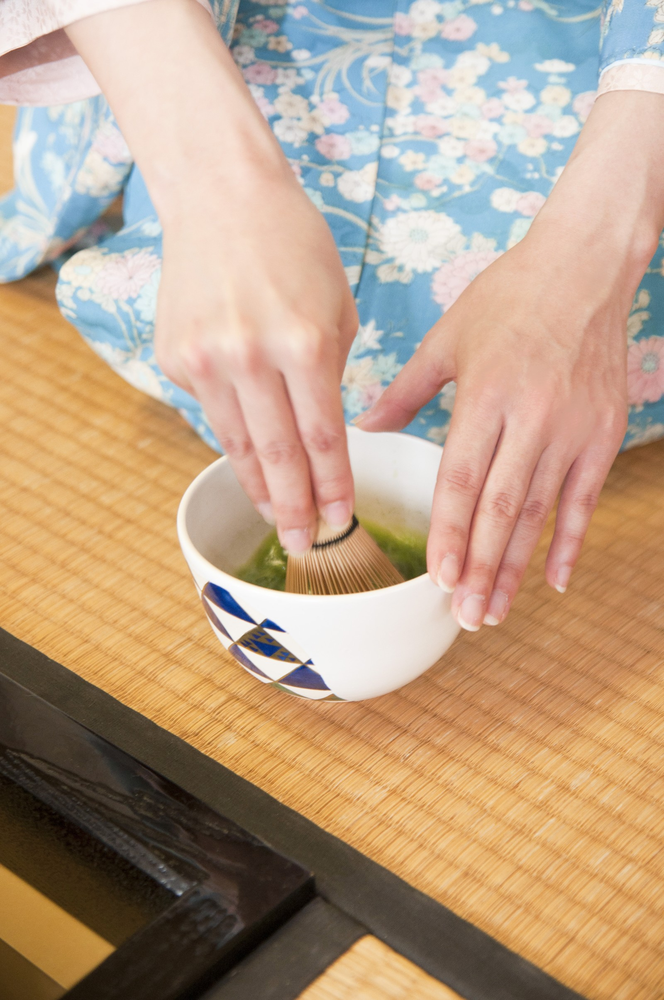

日本ならではの和気配で感じる
「和」は日本という意味もありますが、人と人とのつながり、きずなを意味するものでもあります。
その形のない「和」を気配で感じて、日本ならではの「和」を楽しみましょう。
枯山水

水を使わずに水を表現する枯山水は、日本庭園の様式の一つです。
和服

日本従来の衣服である和服は、近年でも大変人気で、着物とも呼ばれています。
茶道
茶を点てることは心を落ち着かせることと同じです。点てたお茶を客人に振るまう儀式こそ、おもてなしの心とつながります。